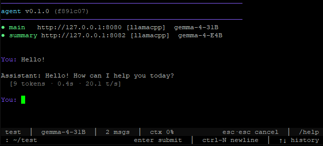

agent
agent
Source: README.md · last changed 2026-07-17 (02622d9)
A local, tool-driven coding assistant that talks to an OpenAI-compatible LLM endpoint (e.g. llama-server from llama.cpp) and runs an autonomous file/shell tool loop. Built to survive long sessions: checkpoints every turn, summarizes older history in the background, recovers from malformed tool calls, and catches common hallucinations before they poison context.

Install
pip install --user -r requirements.txt
On Ubuntu 24.04+ (PEP 668 / externally-managed system python), add --break-system-packages, or install into a venv:
python3 -m venv .venv && .venv/bin/pip install -r requirements.txt
Windows (Git-Bash) setup
The runtime is cross-platform Python. The exec_command tool shells out to bash so shell idioms (heredocs, pipes, &&, /tmp/...) run unchanged — on Windows that bash comes from Git-Bash, not cmd or PowerShell.
- Install Git for Windows. It bundles a standalone
bash.exe(MSYS2) andgit— no WSL required. - Install Python 3.10+ for Windows, then
pip install -r requirements.txt. (Install the GitHub CLIghtoo if you run the CICD pipeline.) - Make
bashresolvable. The runtime locates Git-Bash itself and deliberately ignoresC:\Windows\System32\bash.exe— that's the WSL launcher stub, which fails every command with "Windows Subsystem for Linux has no installed distributions" if you don't run WSL. (Barebashwould re-resolve straight back to that stub, so it's not used as a fallback.) Resolution order: -AGENT_BASH_EXEenv var pointing at the full path (e.g.C:\Program Files\Git\bin\bash.exe, or%LOCALAPPDATA%\Programs\Git\bin\bash.exefor a per-user Git install) — set this if auto-detection fails, then - known Git-Bash install locations (C:\Program Files\Git\bin\bash.exe, the(x86)variant, and the per-user%LOCALAPPDATA%path), then - derived fromgitonPATH— Git for Windows keepsbash.exein a siblingbin\ofgit.exe, so ifgitworks, Git-Bash is found even when only Git'scmd\(notbin\) is onPATH, then -where bashonPATH, excluding the System32 WSL stub and anyWindowsAppsStore alias. - Run from a Git-Bash shell, not
cmd/PowerShell:bash python agent.py "fix the failing test in tests/test_parser.py"For the CICD pipeline:bash CICD/cicd.sh <repo-url>from Git-Bash. (A native PowerShell launcher is a separate, not-yet-done port.) - (Optional) shorten the launch command — run
/aliasinside the agent to install anagentshell alias (<python> /path/to/agent.py→agent). On Git-Bash it writes to~/.bashrc;source ~/.bashrc(or open a new shell) and then just runagent.
Platform notes:
- Double-Escape cancellation is a POSIX-tty feature and is a no-op on the Windows console — use
Ctrl+C, or a TUI host's cancel keybinding. - The bedrock credential-store lock uses
msvcrton Windows (fcntlon POSIX); both auto-release on process exit. - State lives under
%USERPROFILE%\.config\agent\. - Native Windows validation is pending a
windows-2022runner; the suite is currently validated on Linux plus platform-simulation tests (tests/test_windows_compat.py).
Quick start
- Start an OpenAI-compatible LLM server locally (default endpoint
http://127.0.0.1:8080):bash llama-server -m your-model.gguf --port 8080 - (Optional) create a
config.jsonin your working directory — see Configuration. - Run:
bash python agent.py "fix the failing test in tests/test_parser.py"
Recommended models:
| Role | Model |
|---|---|
| Main (GPU) | Qwen3.6-27B or gemma-4-31B-it via llama-server |
| Summary (CPU) | Qwen3-4B or gemma-4-E4B-it |
Run a second llama-server instance on CPU for the summary backend (see Configuration) — it handles short summarisation calls so the main GPU model stays free for reasoning.
Fine-tuned variants (optional) — trained to reduce common tool-use friction patterns:
- Qwen3.6-based: mblakemore/qwen3.6-35b-agent-friction-phase1
- Gemma 4-based: mblakemore/gemma-4-31B-agent-friction-phase9
See docs/local-model.md for download, quantize, and serve instructions.
CLI
python agent.py [OPTIONS] [PROMPT...]
| Flag | Description |
|---|---|
-a, --auto |
Automation mode — run the prompt and exit; no interactive loop. |
-c, --continue |
Resume from the last checkpoint. Combine with -a for auto-resume-and-exit. |
-r N, --repeat N |
Run the prompt N times with fresh state each run (0 = indefinitely). Implies -a. |
--nudge |
When the model returns a text-only response, auto-nudge it to keep going. Off by default. |
--no-tui |
Use a plain input() prompt instead of the prompt_toolkit TUI. |
--verbose |
Start with full (uncompacted) tool output. Toggle in-session with /verbose. |
--backend-main |
Override the main backend kind (llamacpp or bedrock). |
--backend-summary |
Override the summary backend kind (llamacpp or bedrock). |
-cc [HOST:PORT] |
Launch an Anthropic-compatible gateway for Claude Code (default 127.0.0.1:8788) that forwards to the configured main backend, then exit. See Claude Code gateway. |
PROMPT... |
Initial prompt. Optional in interactive mode. |
Press Escape twice within 400ms to cancel a streaming response.
Claude Code gateway (-cc)
agent.py -cc stands up an Anthropic-native /v1/messages endpoint and points it at whichever backend agent.py is configured for (llamacpp, bedrock, or foundry). This lets Claude Code — or anything that speaks the Anthropic Messages API — drive your local/self-hosted model.
python agent.py -cc # listen on 127.0.0.1:8788
python agent.py -cc 0.0.0.0:9000 # explicit host:port
python agent.py -cc --backend-main bedrock # forward to a different backend
Then point Claude Code at it:
export ANTHROPIC_BASE_URL=http://localhost:8788
export ANTHROPIC_API_KEY=dummy # any non-empty value; the gateway ignores it
claude
How it works:
- It is a stateless translator — Anthropic Messages in, OpenAI chat-completions to the backend, and the streamed reply translated back to Anthropic SSE. Tool definitions,
tool_use/tool_resultblocks, images, and streaming tool calls are all converted in both directions. - Claude Code runs its own agentic loop and resends the full conversation each turn, so the gateway bypasses
agent.py's session pipeline (no checkpointing, summarization, or cycle limits) and forces a fresh backend conversation per request. - The model id Claude Code sends is ignored; requests always go to the configured main backend's model. Gemma
<think>reasoning is suppressed so it doesn't surface as message content. GET /healthreports backend reachability;POST /v1/messages/count_tokensreturns an estimate.
Resilience for slow/flaky backends. If the backend cuts a stream after tokens have started flowing (e.g. a Bedrock proxy behind an API Gateway with a ~29s timeout), the gateway closes the turn cleanly with stop_reason: max_tokens instead of letting the client see "stream ended prematurely". If the backend fails before any content reaches the client, the gateway retries with backoff (only then — once tokens stream, retrying would duplicate output). Tunable via env vars:
| Variable | Default | Description |
|---|---|---|
CC_GATEWAY_MAX_RETRIES |
2 |
Retries when the backend fails before producing any content. Each retry can cost up to one read-timeout, so keep it small. 0 disables. |
CC_GATEWAY_RETRY_BASE_DELAY |
1.0 |
Initial backoff (seconds); doubles each retry. |
CC_GATEWAY_RETRY_MAX_DELAY |
8.0 |
Cap on backoff (seconds). |
CC_GATEWAY_CONNECT_TIMEOUT |
30 |
Connect timeout to the backend (seconds). |
CC_GATEWAY_READ_TIMEOUT |
600 |
Read timeout — a slow backend can hold the stream this long. |
AGENT_FOLD_SYSTEM |
auto |
Workaround for backends that silently drop role:"system". auto probes the backend once (~20 tokens, ~1.5s) and caches the result per (base_url, model) for 7 days; always folds without probing; never disables. Applies to both -cc and the main agent loop. |
AGENT_CACHE_DIR |
~/.cache/agent |
Where the probe result is cached (backend_caps.json). |
Backends that silently drop system messages
Some OpenAI-compatible gateways accept a role:"system" message, return HTTP 200,
and never show it to the model — no error, no warning. The symptom is an agent that
appears to ignore its instructions. This was measured against a Bedrock proxy behind
API Gateway, where a 9-word system prompt is dropped exactly like a 6000-token one
(developer too); the likely cause is that Bedrock's Converse API takes system
as a top-level parameter rather than a message role, so it is lost in translation.
When AGENT_FOLD_SYSTEM=auto (the default), the backend is probed once and, if it
drops system, system content is merged into the following user message — which
every backend delivers. Backends that honour system (e.g. local llama.cpp) are
left untouched.
The probe fails safe: any error, timeout or ambiguous reply folds. Folding a
backend that works is harmless; not folding one that drops system silently
discards the entire system prompt.
This is a workaround — the durable fix is server-side. The 7-day cache TTL means a server-side fix is picked up automatically without a config change.
These mitigate transient failures but cannot make a turn that genuinely needs longer than the backend's hard timeout complete — that requires fixing the backend (e.g. streaming via a Lambda Function URL instead of API Gateway).
Implemented in cc_gateway.py; requires fastapi + uvicorn (already in requirements.txt).
Interactive TUI
The default TUI (prompt_toolkit) provides:
- Bottom toolbar —
cwd · model · message count · context ~% · verbose state - Completion for slash commands (
/he<Tab>) and@pathfile refs (@src/<Tab>) - Input history navigable with ↑ / ↓
- Key bindings:
Entersubmits,Ctrl-Ninserts a literal newline
Falls back to plain input() automatically if prompt_toolkit isn't installed.
Slash commands
| Command | Description |
|---|---|
/help |
List available commands. |
/clear |
Clear conversation history and start a fresh session log. |
/context |
Show context usage as an Aurora-gradient bar with token counts. |
/model [main\|summary] [name] |
Set the main or summary model and persist it to .agent/config.json (survives restart). Bare /model picks the main model interactively; /model summary targets the summary backend; append a model id (/model main gpt-4o) to set it directly without the picker. |
/alias |
Detect the working Python and install an agent shell alias (<python> /path/to/agent.py → agent). Writes an idempotent block to ~/.bashrc / ~/.zshrc on Linux & Git-Bash; prints PowerShell/cmd equivalents on native Windows. |
/verbose |
Toggle compact vs. full tool-result output. |
/tools [N\|all] |
Show buffered tool calls with a one-line result preview. |
exit / quit |
End the session. |
Environment variables
| Variable | Description |
|---|---|
NO_COLOR=1 |
Disable all terminal colors and cursor escapes (also active when stdout is not a TTY). |
BEDROCK_API_URL |
Bedrock gateway URL — fallback when the keystore has no up entries. |
BEDROCK_API_KEY |
Bedrock API key — fallback. |
AGENT_BEDROCK_STORE |
Override path to the bedrock_creds.json keystore. |
BEDROCK_DAILY_CAP_USD |
Combined daily spend cap across roles (default $10 main, $1 summary). |
AGENT_HEALTH_TIMEOUT |
Seconds to wait for the startup backend health probe (default 10). Raise it for cold-start endpoints (e.g. AWS API Gateway/Lambda) that are slow on the first request. |
AGENT_BASH_EXE |
Windows only — full path to bash.exe for the exec_command shell, overriding Git-Bash auto-detection. |
How it works
Each cycle is a turn loop:
- Build a context window from recent history plus an async summary of older history.
- Stream a response from the LLM.
- Execute any tool calls.
- Feed results back in and repeat until the model stops calling tools, a turn limit is hit, or the user cancels.
Guardrails:
- Checkpointing — history and summary state are written to
.agent/state/conversation_checkpoint.jsonevery turn.--continueresumes from there. - Async summarization — a background thread condenses older messages while the main model keeps working.
- Cycle limits — after
cycle.max_turnsturns (default 100) the agent is asked to wrap up; aftercycle.wind_down_turnsmore it is forced to stop. - Text-loop detection — three identical text responses in a row ends the cycle.
- Hallucination guards — fabricated file-read messages are stripped and a correction injected. Malformed tool-call JSON is salvaged heuristically.
- Tool recovery — recoverable tool errors (e.g. bad line numbers) are retried with corrected parameters via a lightweight LLM call.
- Context overflow handling — three consecutive HTTP 500s are treated as context overflow; the agent trims history and retries.
Project layout
agent.py # Main loop, streaming, context management, checkpointing
callbacks.py # UI callback interface
commands.py # Slash-command dispatcher
tui.py # prompt_toolkit front-end
cancel.py # Double-escape cancel handler
spinner.py # Aurora-pulsed visual feedback
theme.py # Aurora color palette + ANSI escapes
token_utils.py # Tokenizer (Gemma) with char-based fallback
tool_recovery.py # Auto-recovery from recoverable tool errors
llm_backend.py # LLM backend abstraction (llamacpp, bedrock)
bedrock_api.py # AWS Bedrock Chat API integration
cc_gateway.py # Anthropic /v1/messages gateway for Claude Code (agent.py -cc)
tools/
file.py # read / write / insert / append / delete / list
exec_command.py # Shell execution with background-session support
search_files.py # Grep-like search with glob and case controls
read_pdf.py # PDF text extraction (PyMuPDF)
web_fetch.py # URL → markdown, saved to disk with inline preview
think.py # Deep-reasoning tool via a separate thinking call
task_tracker.py # Persistent task list in .agent/state/tasks.json
sleep.py # Pause execution
.agent/ # Runtime artifacts (created on first run, gitignored)
state/ # Checkpoint, tasks, cycle counter, web_fetch cache
history/ # Per-session verbose logs
Agent-specific tools in ./tools/ alongside your working directory are auto-discovered and registered on startup.
Configuration
Drop a config.json in the working directory (i.e. wherever you run agent.py from) to override defaults. All sections are optional; omitted keys use the defaults listed below.
The agent looks for .agent/config.json first, then falls back to config.json in the working directory. Putting it under .agent/ keeps your local, key-bearing config alongside the other runtime files. When you run inside a git repo, the agent best-effort adds .agent/ and config.json to .gitignore so your config (which may hold API keys) and runtime state never get committed. Outside a repo it leaves the directory untouched.
backends
Preferred shape. Replaces the legacy llm / summary flat blocks (which still work — they are synthesized into backends at load time).
{
"backends": {
"main": {
"kind": "llamacpp",
"base_url": "http://127.0.0.1:8080",
"model": "my-model-name",
"api_key": "",
"stream": true
},
"summary": {
"kind": "llamacpp",
"base_url": "http://127.0.0.1:8082",
"model": "my-summary-model",
"enabled": true
}
}
}
| Key | Default | Description |
|---|---|---|
kind |
"llamacpp" |
Backend type: "llamacpp", "bedrock", or "foundry". |
base_url |
"http://127.0.0.1:8080" |
OpenAI-compatible endpoint. |
model |
"gemma-4-31B" |
Model name passed to the endpoint (informational for llamacpp; selects the Bedrock model ID for bedrock). |
api_key |
"" |
Bearer token sent as Authorization: Bearer <key>. Keep this file chmod 600. |
stream |
true |
Set false to use non-streaming completions (useful for debugging). |
enabled |
true (main) / true (summary) |
Set false to disable the summary backend entirely. |
For Bedrock-specific keys (api_url, spend caps, keystore) see docs/bedrock.md.
generation
Inference parameters forwarded to the LLM on every request.
| Key | Default | Description |
|---|---|---|
temperature |
0.6 |
Sampling temperature. |
top_p |
0.95 |
Nucleus sampling threshold. |
top_k |
20 |
Top-K sampling. |
min_p |
0.0 |
Min-P sampling (0 = disabled). |
presence_penalty |
0.0 |
Penalise tokens already present in context. |
context
Controls context-window sizing and compaction.
| Key | Default | Description |
|---|---|---|
ctx_size |
114688 |
Context window size in tokens. Auto-detected from the server's /props endpoint when available; this value is the fallback cap. |
max_tokens |
16384 |
Maximum tokens in a single completion. |
max_full_lines |
800 |
Lines of tool output kept verbatim before compaction. |
preview_lines |
200 |
Lines shown in the compacted preview. |
summary_threshold |
5 |
Messages beyond which background summarisation fires. |
summary_max_chars |
3000 |
Maximum characters in a generated summary chunk. |
max_context_messages |
30 |
Hard cap on messages sent to the LLM per turn. |
cycle
Per-session run limits.
| Key | Default | Description |
|---|---|---|
max_turns |
250 |
Stop (or wind down) after this many turns. |
wind_down_turns |
10 |
Turns of grace period after max_turns before a hard stop. |
max_text_only |
3 |
Consecutive text-only responses that trigger a halt (loop detection). |
max_total_nudges |
6 |
Total auto-nudges allowed before giving up (requires preferences.nudge or --nudge). |
retry
Exponential-backoff settings for failed LLM requests.
| Key | Default | Description |
|---|---|---|
max_retries |
10 |
Maximum retry attempts before the request fails. |
base_delay_seconds |
2 |
Initial retry wait. |
max_delay_seconds |
60 |
Cap on retry wait. |
backoff_multiplier |
2.0 |
Multiplier applied to delay each retry. |
jitter_factor |
0.1 |
Random jitter added to each delay (fraction of current delay). |
bedrock
Bedrock-specific tuning (only relevant when backends.main.kind or backends.summary.kind is "bedrock").
| Key | Default | Description |
|---|---|---|
adaptive_max_tokens |
true |
Dynamically adjust max_tokens per request based on detected prompt complexity, staying within the model's limit. |
preferences
Behavioural knobs that don't fit elsewhere.
| Key | Default | Description |
|---|---|---|
nudge |
false |
Auto-nudge the model when it returns a text-only response. Also settable with --nudge CLI flag. |
persist_nudge |
false |
After a text-only stop, check git status; if uncommitted changes exist and no commit happened this session, inject one nudge to commit. Intended for git-native agents. |
tool_selection_hints |
false |
Prepend a system-prompt directive recommending file(action='edit') over heredoc rewrites for existing-file edits. |
max_text_response_chars |
24000 |
Cap on text-only response length per turn (characters). Only enforced when nudge is on. Prevents context-filling monologue spirals. |
max_post_tool_text_chars |
2000 |
Cap on prose generated after tool calls in the same turn. |
extra_allowed_paths |
[] |
List of absolute directory paths the file tool is allowed to read/write outside the working directory. |
tools_whitelist |
null |
Restrict the tool schema sent to the LLM to this list of tool names. null = all tools. Example: ["file", "exec_command", "search_files", "think", "task_tracker"]. |
initial_tasks |
[] |
Task descriptions pre-seeded into task_tracker at session start (only when the task list is empty — does not overwrite an in-progress cycle). |
seed_tasks_persistent |
false |
Re-seed initial_tasks at the start of every cycle, not just on a fresh task list. |
command_guards
A list of regex-pattern / message pairs that intercept exec_command calls before the shell sees them. When a command matches a pattern, execution is blocked and the message is returned to the agent as a tool error — the agent can then reason about it and try something else.
Patterns are case-insensitive regexes matched against the full command string.
{
"command_guards": [
{
"pattern": "\\b8080\\b",
"message": "BLOCKED: Port 8080 is used by the llama.cpp main inference server. Do not start processes on it or kill processes using it. Use a different port (e.g. 8765) for http.server."
},
{
"pattern": "\\b8082\\b",
"message": "BLOCKED: Port 8082 is used by the llama.cpp summary inference server. Do not use it."
},
{
"pattern": "rm\\s+-rf\\s+/",
"message": "BLOCKED: Refusing to run recursive delete from filesystem root."
}
]
}
Guards fire after the built-in hallucination guards (/home/user, python→python3) but before the command runs.
Full example
{
"backends": {
"main": { "kind": "llamacpp", "base_url": "http://127.0.0.1:8080" },
"summary": { "kind": "llamacpp", "base_url": "http://127.0.0.1:8082", "enabled": true }
},
"generation": { "temperature": 0.8 },
"context": { "ctx_size": 32768 },
"cycle": { "max_turns": 50 },
"preferences": {
"nudge": true,
"tools_whitelist": ["file", "exec_command", "search_files", "think", "task_tracker"]
},
"command_guards": [
{
"pattern": "\\b8080\\b",
"message": "BLOCKED: Port 8080 is reserved for the llama.cpp server."
}
]
}
Bedrock backend
The agent supports AWS Bedrock Chat gateway for either the main or summary model. See docs/bedrock.md for credentials, keystore management, spend caps, config examples, and known limitations.
Dependencies
- Python 3.7+
requests— HTTP to the LLM endpointtransformers+torch— Gemma tokenizer (optional; falls back to char-based estimate)PyMuPDF(fitz) — PDF extraction (tools/read_pdf.py)markdownify— HTML → Markdown (tools/web_fetch.py)prompt_toolkit— interactive TUI (optional; falls back to plaininput()automatically)- A running OpenAI-compatible LLM server